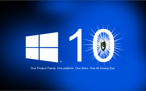
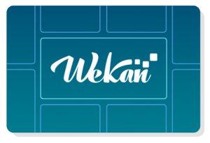
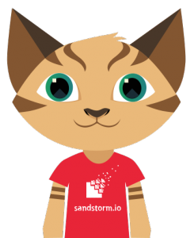

What is NOT time well spent
- Reading news about what terrible accidents have happened.
- Using Windows 10 at desktop. Waiting for gigabytes of updates to download from Internet. Waiting Windows to reboot countless times to install updates, while you are unable to do anything at the computer, waiting for percentage display to show any progress. Being unable to fix any bugs in Windows 10 source code. Going through countless of hacks to get latest updates to install. Reinstalling Windows, because something broke it. Being unable to disable all the spying etc telemetrics that send your data to Microsoft. Installing Nim programming language to Windows 10, watching how it got immediately deleted by Windows Defender. Yes, I tried to fix those Windows 10 laptops. Guess why I use Linux at desktop.
- Using macOS at desktop. Upgrading to Sierra and having all your local MySQL databases being corrupted. Failing to fix those databases, so I needed to install MySQL database to that customer developer laptop using remote desktop software TeamViewer-, and restore all databases to there. Upgrading to High Sierra. Fighting with macOS workarounds to make local websites visible with Nginx installed to that other customer developer laptop – I did get it working with some workaround though. Being unable to change macOS source code to fix bugs. Guess why I use Linux at desktop.
- Working at office. Spending time in traffic to arrive to office. Having work offer with requirement to move to live somewhere else, usually hundreds of kilometers from where you live. Trying to move to live elsewhere, in other city, or another country. Paying for moving all your stuff to new place. Boxing and unboxing all your stuff. Paying double rent, for previous and new apartment. Then there was something boss did not like, so work did not continue. Having another work offer with requirement to move to live somewhere else. Yes, some of this happened to me. Guess why I only do remote work, and have done so for many years. For more info, see book REMOTE: Office Not Required . Yes, it is real link to website, not an affiliate link. No, they have not paid for that link, or contacted me in any way. I just like ideas in that book.
- Having full time job. Having deadlines and angry customers. Doing quick messy fixes, that are costly to maintain and update afterwards. Not being able to rest when you are tired. Not having enough time for your hobbies. Developing propietary code. Yes, I do have some deadlines for some customers. That is work, not a hobby like Wekan.
- Responding to GitHub issues that ask “Any update on this feature?” . You did not ask how to develop that feature yourself. You did not read the documentation, or write the missing documentation, or fix the outdated documentation. You did not search with Google for that error message, how to fix it, add that info to GitHub issue. You did not send pull request to Wekan devel branch. Yes, it’s possible that you did add bounty with instructions from https://wekan.github.io to that issue, thank you! But you did choose waiting for that feature to be developed, and asking “Any update on this feature?” . The problem is time. Time spent with only waiting, and not doing it yourself. You could have that feature implemented. You could have that bounty money, there are many bounties for Wekan. But is being able to fix bug or add feature to Wekan yourself important to you? Do you use Wekan daily? Is it time well spent for you? For me, maintaining Wekan takes time. There are limited amount of developers that really have time for Wekan. I have asked does someone have time to code for Wekan. Many times, answer is no.
- Trying to rewrite Wekan. I have done only incremental small updates, not rewriting Wekan. I have been maintaining Wekan for about 1,5 years, and I’m still not familiar enough with Wekan to try rewriting it.
What is time well spent
We are going to spend then next few minutes getting you ready for main body of the workout. A good warmup not only reduces the risk of injury, it also increases performance, so it’s time well spent.
– You Are Your Own Gym (YAYOG) Android app, WarmUp video
- Benefits of contributing your features to upstream Wekan. Trying to do this also myself to Wekan upstream dependency packages, spending a lot of time trying really hard at upgrading Wekan to Meteor 1.6.1 with this pull request that did get merged, ending up with requirement to update all dependency packages to use CoffeeScript 2 with pull requests to all those projects if they don’t yet support CoffeeScript 2, and needing more time for all the upgrades.
- After a lot of tries getting a bugfix to software like Wekan, like finally having success in removing broken emoji support from Wekan. It really did annoy me to have clock times, link in URLs etc broken, so I was relieved after. Sure, that bug was someones feature so they thought removing broken emoji support was catastrophic, so I posted workarounds for him.
- Forking WordPress-Sandstorm , so that I could to fix some bugs. Making roadmap for that fork. Having help from kentonv and dwrensha with getting .spk compiled. Getting email from JamborJan about he helping with WordPress fork. Inviting kentonv, dwrensha and JamborJan to have direct commit access to WordPress-Sandstorm repo. Writing about my WordPress-Sandstorm plans to some that offer hosting Standalone Wekan and Sandstorm.
- Chatting about Sandstorm has been security audited , about Sandstorm being completely Open Source with all passwordless login / Google / GitHub / LDAP /SAML auth and being currently the safest platform to build on for GDPR, not having encrypted grains at rest yet on server – but still being better by having it hosted on private cloud in known location, instead of just guessing where all over various data is at cloud providers like Google, AWS and Azure.
- Trying to get Sandstorm compiled, so I could get new developer started with contributing to Sandstorm and Wekan.
- Helping new Wekan developer to improve new Wekan feature pull request.
- Being a freelancer. Not being dependent on one customer or fulltime work for one company. Having the right to say no to work that I don’t want to do. Spending my time maintaining Wekan for free, as a hobby. Yes, growing number of customers pay for Wekan work, but those have only come after I had maintained Wekan for free for over one year. Still most of Wekan maintainance I do for free, without any payment. It’s because I’m scratching my own itch, I’m using Wekan for myself, being my own customer. Being able to fix software I use is priceless. Yes, I then get less money than I would get when working fulltime for some company. All the thanks and community have encouraged me to continue work for Wekan.
- Being able to translate Wekan, Sandstorm, Rocket.Chat, ReactOS, Gogs, and other Open Source software.
- Having fun with Wekan community.
- Helping new developers to develop their feature. Talking where we live, how to learn all this cool stuff, how to fix all the things.
- Someone asking could Wekan license be changed from MIT to GPL. I did start by telling that I was not original developer of Wekan, and that reaching all previous Wekan developers to ask for license change would usually be impossible, or take a lot of time. Meteor.js framework etc is MIT license. Arguing about license is like arguing about about Vi vs Emacs. So I got fed up with long discussion and threatened that now all license talk ends, or I’ll change Wekan license to WTFPL , and you really don’t want that. It is an offence to any lawyer or judge, and you will lose the case. You do not want to read that license aloud to your company legal department. Because I don’t think license change is a good April Fools joke, and I don’t want any April Fools joke.
- I prefer to talk seriously that I’m looking for translators to translate Wekan to Klingon for upcoming Mars space travel missions. I try to be serious, as I like Star Trek. So I did find on web Klingon Language Institute non-profit and did put serious thought and description to about my Klingon plans to translation request at https://www.kli.org/question/translating-wekan-to-klingon/ . I really wish they reply in serious way, not as a joke.
What is time well spent for you?
This is only how I think what is time well spent for me. Yours is different. Do you have time for Wekan? Is Wekan important for you?
Thank you.
xet7
On behalf of Wekan Team